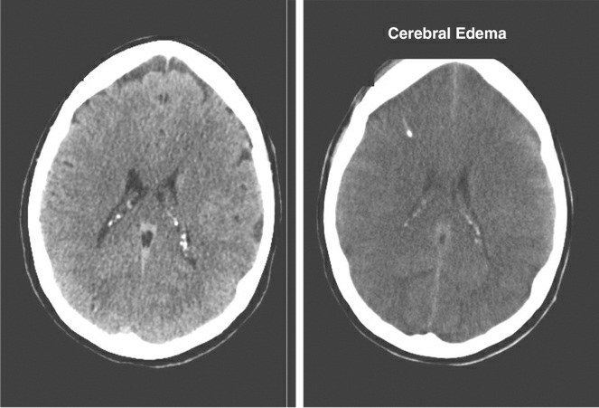
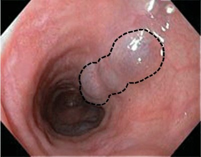

PA · FC
NH₃ arterial µmol/L (normal <60 · riesgo >150 · ilustrativo)
West Haven:

Figura real: TC de cráneo antes (izquierda) y después (derecha) del edema cerebral: se borran los surcos. Marino, Fig. 39.2.

Figura real: várices esofágicas, venas engrosadas por la hipertensión portal. Marino, Fig. 39.3.
Las fuentes de este modelo
Lo que crecerá
Notas: lo que la fuente no dice, lo que discrepa
Para profundizar: lo que el modelo no enseña